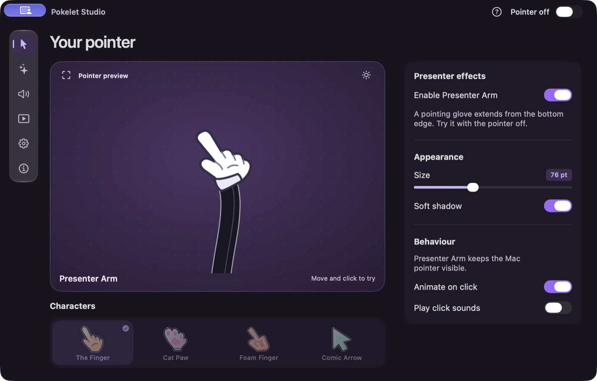

Animated cursors for Mac
Pokelet is a free, open-source cursor app for macOS 14 or later. Pick The Finger, Cat Paw, Foam Finger or Comic Arrow, then decide how the character looks and reacts when you click.
Try the browser cursor demoSet up a custom cursor
- Follow the installation instructions. From the hand icon in the Mac menu bar, choose Open Pokelet Studio.
- In Studio, select a character and set its Size. Under Colour, choose a preset or select the eyedropper to reveal the Custom colour picker. Turn on Contrasting outline if the pointer blends into your background.
- Open Animations to adjust the click response and test it in the preview. Try Barely There for a gentle reaction or switch on Reduced Motion for fading feedback. Click sounds are optional.
- Choose Enable Pointer from the menu bar to use your setup. Choose Disable Pointer there to return to the standard Mac pointer.

Choose when the cursor appears
- Companion
- The character follows beside the standard Mac pointer. Try this first if you rely on the usual text, link and resize cursors.
- Click-only mode
- The standard pointer remains visible and the character appears when you click. Find this option in Animations.
- Replace in Studio
- The character replaces the pointer in eligible parts of the active Studio window. Elsewhere it behaves as a companion.
For a demo or talk, see how to share your pointer during a presentation.